Reference sheet · Tarot
Every suit card on one sheet — the 1888 title, the scene Smith drew, and the meaning to say at the table. The lookup this course's rules were building toward; the history behind the columns lives in the ancestry sheet, and the drill that moves the rows into memory is lesson 7.
The number names its stage in the ten-chapter arc of lesson 4 — the words below are the order's own:
| Ace | 2 | 3 | 4 | 5 | 6 | 7 | 8 | 9 | 10 |
|---|---|---|---|---|---|---|---|---|---|
| root | Initiation | Resultant | Realization | Opposition | Accomplishment | A possible result | Solitary success | Fundamental force | Completed force |
The court ranks name their posture toward the suit's business, from lesson 6: Page learning it · Knight pursuing it · Queen keeping it · King running it. The person / self / approach procedure and the full court grid live in the courts sheet.
| Card | Book T title · posture | The picture (Smith, 1909) | At the table | Simple meaning |
|---|---|---|---|---|
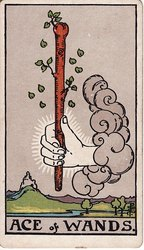 Ace | Root of the Powers of Fire | A hand from a cloud holds out a living staff, leaves still sprouting; a castle waits in the distance. | The spark of a venture — raw energy and appetite, before any plan exists. | creative spark · fresh energy · beginnings |
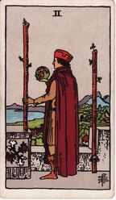 Two | Dominion | A man on a castle battlement holds a small globe, one staff bolted to the wall, one in his hand. | The world in hand and not yet used — planning, and the choice between safe ground and setting out. | planning · direction · foresight |
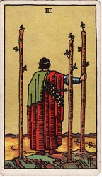 Three | Established Strength | A robed figure on a cliff watches his ships from between three planted staves. | Work in motion — the ships are sent, results are coming, keep looking outward. | expansion · momentum · anticipation |
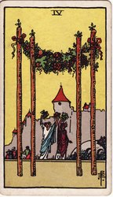 Four | Perfected Work | Four staves carry a garland canopy; two figures raise bouquets before a castle. | A stage completed and worth marking — celebration, homecoming, the structure holds. | celebration · homecoming · community |
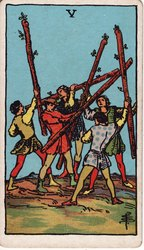 Five | Strife | Five youths swing staves at each other; nobody is hurt and nothing is decided. | Friction and competition — everyone pushing at once, more sparring than war. | competition · rivalry · friction |
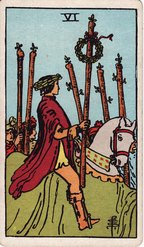 Six | Victory | A laurel-crowned rider passes through a crowd of raised staves. | Recognition — the win made public, confidence riding high. | victory · recognition · pride |
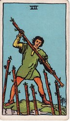 Seven | Valour | A man on higher ground holds his staff against six rising from below. | Holding your position under challenge — pressed, but with the advantage of ground. | standing firm · self-defense · courage |
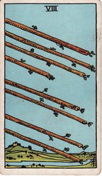 Eight | Swiftness | Eight staves fly together through open sky over a calm landscape. | Sudden movement — news, travel, everything landing at once after the wait. | speed · news · travel |
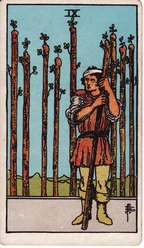 Nine | Great Strength | A bandaged man leans on his staff before a palisade of eight more. | Worn but standing — resilience, the last watch before the matter closes. | resilience · weariness · vigilance |
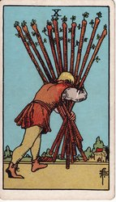 Ten ‡ | Oppression | A man bent double carries all ten staves toward a town. | The venture won and turned to weight — overload, carrying it alone, nearly there. | burden · duty · overwork |
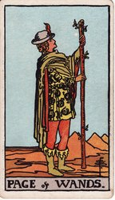 Page | learning it | A young messenger stands studying his staff; Waite calls his tidings "strange". | News of a venture — or enthusiasm still ahead of skill. | enthusiasm · discovery · potential |
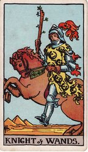 Knight | pursuing it | The horse rears; cloak and plume stream with the motion. | Chasing the venture — energy, haste, a departure. | bold pursuit · wanderlust · enthusiasm |
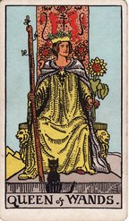 Queen | keeping it | Enthroned with a sunflower and staff; a black cat sits before her. | Warm command of home ground — confident, magnetic, unbothered. | self-assurance · warmth · magnetism |
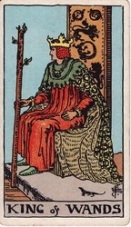 King | running it | Enthroned with a sprouting staff; salamanders on the canopy, a live lizard beside him. | The venture governed — leadership with vision, fire held in office. | leadership · vision · enterprise |
| Card | Book T title · posture | The picture (Smith, 1909) | At the table | Simple meaning |
|---|---|---|---|---|
| Root of the Powers of Water | A hand offers an overflowing cup; a dove descends to it; five streams pour into a lily pond. | Feeling begins — openness, affection arriving, more than the cup can hold. | openness · new love · creativity | |
| Love | A man and a woman exchange cups beneath a winged lion's head over a caduceus. | Partnership — mutual attraction, a bond that runs both ways. | mutual care · attraction · partnership | |
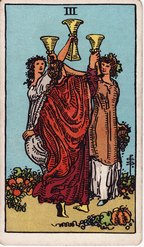 Three | Abundance | Three women dance in a ring, cups raised, fruit at their feet. | Celebration in company — friendship, the shared toast. | community · shared joy · friendship |
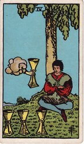 Four | Blended Pleasure | A seated man, arms crossed, ignores a fourth cup offered from a cloud. | Apathy — discontent with what is there, and a gift going unnoticed. | apathy · dissatisfaction · reflection |
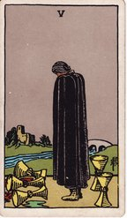 Five | Loss in Pleasure | A cloaked figure mourns three spilled cups; two still stand behind him; a bridge leads home. | Regret — real loss, mourned so completely it overlooks what remains. | grief · regret · disappointment |
| Pleasure | In a quiet courtyard a child hands a cup of flowers to a smaller child. | The past revisited kindly — old sweetness, innocence, what childhood gave. | nostalgia · childhood · familiar comfort | |
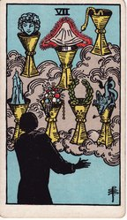 Seven | Illusionary Success | Seven cups float in cloud, each holding a vision — a castle, jewels, a wreath, a dragon. | Options multiplied into daydream — wishful thinking; choose one or drift. | many options · fantasy · wishful thinking |
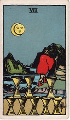 Eight | Abandoned Success | Under a waning moon a figure walks away from eight neatly stacked cups. | Walking away — leaving something whole because it no longer satisfies. | walking away · dissatisfaction · seeking more |
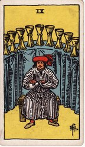 Nine | Material Happiness | A well-fed host sits with folded arms before nine cups arced behind him. | Contentment — satisfaction, the wish granted; the traditional "wish card". | contentment · fulfilled wishes · pleasure |
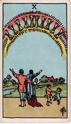 Ten † | Perfected Success | A couple raise their arms under a rainbow of ten cups; two children dance beside them. | Feeling come home — harmony landed in a real household. | family happiness · belonging · emotional harmony |
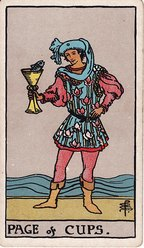 Page | learning it | A fish looks back at the page from his cup, and he seems to be in conversation with it. | Imagination stirring — an intuitive nudge, a small unexpected message. | gentle news · imagination · intuition |
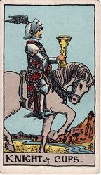 Knight | pursuing it | A knight rides at a walk, cup carried level; Waite: "graceful, but not warlike". | An offer approaching — romance or invitation, brought courteously. | romance · invitation · charm |
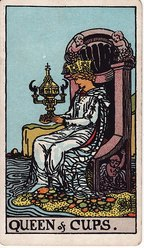 Queen | keeping it | On a throne at the sea's edge she studies an ornate lidded cup, the only one closed in the deck. | Feeling lived and tended — care, deep intuition, activity that feeds the dream. | empathy · emotional care · intuition |
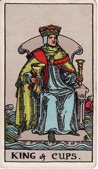 King | running it | His throne floats on the sea; the cup is held level while ships pitch behind him. | Feeling governed, not indulged — calm counsel in weather that moves others. | emotional balance · compassion · tact |
| Card | Book T title · posture | The picture (Smith, 1909) | At the table | Simple meaning |
|---|---|---|---|---|
| Root of the Powers of Air | A hand grips an upright sword, a crown and wreath at its point. | Clarity cutting through — the decisive idea, truth with force behind it. | clarity · truth · breakthrough | |
| Peace Restored | A blindfolded woman balances two crossed swords before a night sea. | A decision refused — an impasse held steady by not looking. | indecision · stalemate · avoidance | |
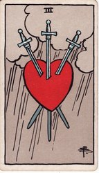 Three ‡ | Sorrow | A heart hangs pierced by three swords under grey rain. | Heartbreak said plainly — grief with no disguise on it. | heartache · sadness · hurt |
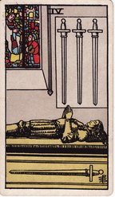 Four | Rest from Strife | A knight lies in effigy in a chapel, hands in prayer, one sword beneath him. | Enforced rest — recovery and retreat before the next round. | rest · recovery · reflection |
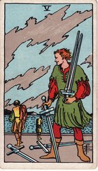 Five | Defeat | A smirking man gathers swords while two figures walk away along the shore. | A win that costs the room — conflict nobody leaves clean, yours included. | bitter conflict · hollow victory · defeat |
| Earned Success | A ferryman poles a woman and child across still water, six swords standing in the bow. | Transition — moving on to a far shore with the trouble still aboard. | moving on · leaving trouble · transition | |
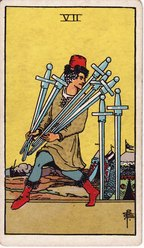 Seven ‡ | Unstable Effort | A man tiptoes from a camp carrying five swords, two left standing behind. | Deception — acting alone, getting away with something, or trying to. | concealment · dishonesty · strategy |
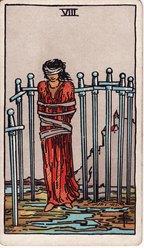 Eight | Shortened Force | A bound and blindfolded woman stands among eight planted swords; the bindings are loose. | Restriction largely self-imposed — the prison is real, its door is not locked. | feeling trapped · self-doubt · limiting thoughts |
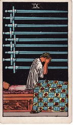 Nine | Despair and Cruelty | A figure sits up in bed at night, face in hands, nine swords ranked on the wall. | Anxiety in the dark — worry and dread at their 3 a.m. size. | anxiety · dread · sleepless nights |
| Ruin | Ten swords stand in a prone man's back; dawn is breaking over the water. | The ending complete — finished, overdone, and morning already behind it. | painful ending · rock bottom · betrayal | |
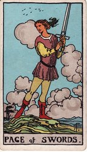 Page | learning it | A youth stands alert on rough ground, sword up, "as if an expected enemy might appear". | Vigilance — watching, questioning, guarding new information. | questioning · alertness · curiosity |
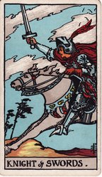 Knight | pursuing it | Full gallop into the wind, sword out, "as if scattering his enemies". | The headlong charge — argument or ambition at full speed. | charging ahead · ambition · quick thinking |
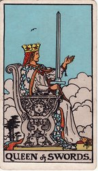 Queen | keeping it | Stern in profile, sword raised, the other hand extended; her face "suggests familiarity with sorrow". | Clear eyes bought dearly — directness, boundaries, no comfortable lies. | plain speaking · firm boundaries · fair judgment |
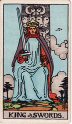 King | running it | He faces straight out from the throne, sword upright, eyes level. | Judgment in office — truth ruling the room, the power to decide. | reason · authority · fair judgment |
| Card | Book T title · posture | The picture (Smith, 1909) | At the table | Simple meaning |
|---|---|---|---|---|
| Root of the Powers of Earth | A hand offers a gold coin above a garden path leading through a gate. | A tangible opportunity — money, work or health, something real to build on. | opportunity · new work · growth | |
| Harmonious Change | A dancer juggles two coins bound in a looping ribbon; ships ride high seas behind him. | Juggling priorities — balance kept only by staying in motion. | juggling priorities · adaptability · balance | |
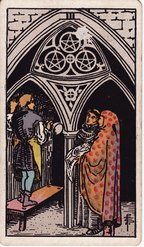 Three | Material Works | A sculptor works in an abbey while a monk and an architect compare his carving with the plans. | Skilled work recognized — collaboration, craft meeting its commission. | teamwork · craftsmanship · collaboration |
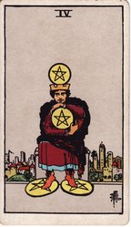 Four | Earthly Power | A crowned man clutches one coin to his chest, balances one on his head, pins two underfoot. | Holding on — security kept so tightly it stops circulating. | security · saving · holding tight |
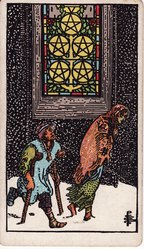 Five | Material Trouble | Two ragged figures pass through snow beneath a lit stained-glass window. | Hardship and isolation — help a wall away and not seen. | material hardship · exclusion · insecurity |
| Material Success | A merchant weighs coins on a scale, giving to one kneeling beggar and not the other. | Giving and receiving — generosity, and the question of who holds the scales. | generosity · giving · receiving | |
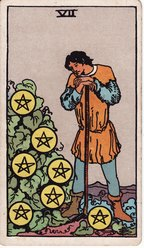 Seven | Success Unfulfilled | A labourer leans on his hoe, studying the coins ripening on his vine. | The pause to assess — patience, the long game, counting what has grown. | patient effort · assessment · future rewards |
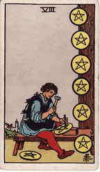 Eight | Prudence | A craftsman chisels a coin, the finished ones nailed up in a row beside him. | Skill built by repetition — apprenticeship, honest unglamorous progress. | apprenticeship · practice · skill |
| Material Gain | A woman stands alone in her vineyard, a hooded falcon on her glove. | Self-sufficiency — comfort earned, owned and enjoyed on her own terms. | earned comfort · independence · success | |
| Wealth | An old man sits with his dogs while a family passes under the archway; ten coins overlay the scene. | Wealth become structure — family, inheritance, the result that outlives the effort. | lasting prosperity · family roots · inheritance | |
| learning it | A youth holds a single coin at eye level and sees nothing else. | Study — a skill or prospect at the absorbed-student stage. | practical study · opportunity · learning | |
| pursuing it | The only court horse standing still; rider and mount look out over a ploughed field. | Slow useful work — routine, diligence, the pursuit that plods and delivers. | steady effort · dependability · daily discipline | |
| keeping it | Enthroned in a garden, she looks down at the coin held in her lap. | Provision — practical care, resources tended so others can live on them. | practical nurturing · home comforts · resourcefulness | |
| running it | His throne and robe are grown over with vines; his castle stands behind him. | Established wealth — steady management, the estate in good hands. | financial stability · capable management · material success |
† The copies of Book T genuinely vary between "Perfected Success" (its section heading) and "Perpetual Success" for this card; this course reads "Perfected Success".
‡ Scene composed after the Sola Busca deck (c. 1491) — the Ten of Wands after its Ten of Swords. Side-by-side pairs at House of White.
The title column is checkable against Book T (c. 1888–96), the aces' "Root of the Powers" names included; the stage words are the Sub Spe manuscript's, via Mary K. Greer. Waite's own card entries and the quoted court phrases are in the Pictorial Key (1911).
The "at the table" column is no one's doctrine. It is where a century of reading Smith's scenes literally has landed — Eden Gray's 1970 guide is the hinge, and today's mainstream (Biddy Tarot is the barometer this sheet was checked against) keeps whichever meaning the picture supports. The simple meaning keywords summarize common upright readings from Biddy Tarot’s Wands, Cups, Swords, and Pentacles guides, cross-checked against Labyrinthos. Where a title and its scene quarrel — the audit is in the ancestry sheet — the picture wins.
Illustrations by Pamela Colman Smith for the Rider–Waite–Smith deck. Public-domain scans via Wikimedia Commons; local image catalogue & sources.